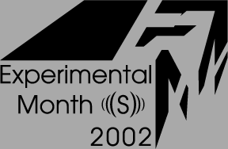

| experimental month(s) は2002年10月14日～12月8日に渡って福岡で行われる、実験／電子音楽のイベント月間で、２ヶ月に渡り８つのイベントやライブがラインナップされています。福岡では行われることの少なかったこういった音楽イベントやライヴ。国内外で活躍する著名なアーティストやミュージシャンの音楽に、直にふれることのできる貴重な期間になることでしょう。 |
| タイトル | 小杉武久展 "mano- dharma, electronic（マノ・ダルマ・エレクトロニック）" |
| 出演 | 小杉武久 |
| 日時 | 10月14日～27日（12:00-19:00）（10月14日14時より小杉武久氏によるパフォーマンス） |
| 場所 | 共同アトリエ・3号倉庫 |
| 料金 | 無料 |
| 主催 | 共同アトリエ・3号倉庫 （http://www.nnr.co.jp/3gosoko/default.htm） |
| 説明 | ＜小杉武久＞ 1960年、日本初の集団即興演奏グループ＜グループ・音楽＞を刀根康尚、塩見允枝子らと結成。60年代中期はニューヨークに滞在。ナム・ジュン・パイクら＜フルクサス＞のメンバーと共にパフォーマンスを行なう。1969年、＜タージ・マハル旅行団＞を結成し、76年まで国内外で数多くの公演を行ない、世界的に高い評価を受ける。77年、アメリカに移住し、マース・カニングハム舞踊団の作曲家／演奏家としてジョン・ケージ、デヴィッド・チュードアらと活動。1995年より同舞踊団の音楽監督を務める一方、個人としてもコンサート活動、サウンド・インスタレーションなど旺盛に活動している。近年はサーストン・ムーア、ヤマタカアイ、ジム・オルークらとも共演し、常に現代芸術の最先端で活動を展開している。 今回は期間中のサウンドインスタレーション作品の展示と、14日のライヴパフォーマンスを行う。 |
| タイトル | experimental month(s) presents "Joel Ryan: live and lecture" |
| 出演 | Joel Ryan |
| 日時 | 10月16日（18:30-21:00） |
| 場所 | 九州芸術工科大学・音響特殊棟スタジオ |
| 料金 | 2000円 |
| 主催 | experimental month(s)（http://www.kyushu-id.ac.jp/~kanta/event/joel） |
| 協力 | salon、sonar sound tokyo |
| 説明 | ＜Joel Ryan＞ リアルタイム・デジタル信号処理に基づく楽器デザインの先駆者であり、またウィリアム・フォーサイス（ダンス、フランクフルト・バレエ団）や、ウッディ＆スタイナ・ヴァスルカ（ヴィデオ・アート）との共同作業で知られる作曲家。ホセ・バロッソ、ラヴィ・シャンカールから音楽を学び、ガレージエンジニアの助けを借りながら電子楽器を作り始める。その後、ミルズ・カレッジで現代音楽と音楽テクノロジーを研究。現在、アムステルダムにあるパフォーマンス・アートのためのスタジオ「STEIM」を拠点に活躍。ジョージ・ルイス(tb)、マルコム・ゴールドスタイン(vln)、エヴァン・パーカー(Sax) 等との共演者としても知られる。今回のレクチャーでは彼独特の身体/音楽論に加え、フォーサイスとの共同作業や、STEIM で開発された映像/音響アプリケーションについてもプレゼンテーションされる予定。 |
| タイトル | urgh! the electronics |
| 出演 | tujiko noriko（mego）、discom、goboujin、anonym、yodaka、maggie guiaaaaa |
| 日時 | 11月7日（20:00-） |
| 場所 | AIR. |
| 料金 | 2000／2500円（＋1drink order） |
| 主催 | popmuzik records（http://www.popmuzik.jp/） |
| 説明 | ＜TUJIKO NORIKO＞ ＜mego＞に所属する日本人アーティスト。音響歌姫。過去2度にわたって来福し、rhythm主宰のイベントに参加。前回はgel:、discomらとのコラボレーションも披露したが、今回もdiscomとの絡みがありそう。 |
| タイトル | FREQ02 |
| 出演 | Robert Dockworth、徳井直生（a.k.a. clickety and clack）、青木孝允（SILICOM）、中居伊織、Rodney Berry、藤枝守、discom(deco)、daisuke_ishida、加藤淳 (zekue, KR3000)、vokoi kazunovsky、anagggggg、take3tsu + mizuki、グリーシー・ブラインドスポット、Ken Inaoka、Soul-DSP、yamato + Mizuki NOGUCHI(VAL)、中村滋延、小畑郁男、平野砂峰旅、さかぐちかずひこ、Lee Hyunjung、田中司恩、dumbo |
| 日時 | 11月8～10日 |
| 場所 | 九州芸術工科大学／ROOMS |
| 料金 | クラブイベントのみ1500／2000円（＋1 drink order） |
| 主催 | FREQ（http://www.kyushu-id.ac.jp/~snlab/freq/） |
| 説明 | ＜FREQ02＞ ３日間にわたるエレクトロニック・ミュージック・イベント。昨年は多数の観客を集め大盛況のうちに終わった。今回はコンサート、ワークショップ、レクチャー、クラブイベントなど多様な形態で展開される。 |
| タイトル | experimental month(s) presents ＜frequency／rhythm＞ |
| 出演 | hecker（mego）、portable[k]ommunity + A |
| 日時 | 11月10日 （18：30-） |
| 場所 | 九州芸術工科大学・多次元棟ホール |
| 料金 | 1500円 |
| 主催 | experimental month(s) |
| 説明 | ＜portable[k]ommunity＞ 前回freqにも登場し、レクチャーも行った彼らは、Max/MSP/nato.0+55、SuperColliderといったプログラミング環境、各種オーディオアプリケーションやハードウェアに対する圧倒的な知識量とスキルを背景にした、精緻な音響/映像プログラミングを行っている。それらをリアルタイムで構築・展開させ、最先端のDSP処理を取り入れつつも肉体性を伴った即興演奏を行っている。現在はACO(Sony Music)のニューアルバムのプロデュースや、企業と共同し様々な実験的イベントの企画、技術サポートなどを手がけている。VJとしての活動も行っており、競演したアーティストにはDJ Kenseiやhoon(坂本龍一＋半野善弘＋yasaka)、細野晴臣氏らがいる。 |
| タイトル | rhythm commission3 |
| 出演 | hecker（mego）、toki takumi、kappa、kashiwa daisuke |
| 日時 | 11月10日（22：30-） |
| 場所 | STAND BOP |
| 料金 | 2000円（＋1 drink order） |
| 主催 | rhythm（http://rhythm_com.tripod.co.jp/） |
| 説明 | ＜hecker＞ もはやあまりに有名なウィーンのテクノ・レーベル＜mego＞。そのmegoを代表するドイツ人アーティストがheckerである。彼のサウンドはノイズ／エレクトロニカ／アンビエントといった領域を軽々と横断していく。福岡ではどのような演奏を聞かせてくれるのだろうか。最近のremixアルバム「[R*] iso/chall」ではジム・オルーク、刀根康尚、マウス・オン・マーズ、大友良英、オウテカなどそうそうたる顔ぶれが参加している。 ＜toki takumi＞ 1979年小倉生まれ。2000年頃からギター演奏を中心とした音楽活動をはじめ、現在ではコンタクトマイクやテープMTR、コンピューターを使用し、物音・摩擦音・電子接触音を即興的に構築する演奏を行う。2002年春にはminamo・Astro twin・Busratchと共に関西ツアーを敢行。これまでには大友良英・秋山徹次・サンガツ・永田一直・ユタカワサキ・吉田アミなどと共演してきた。今回はコンピューターとテープMTRを使用した演奏となる予定。 |
| タイトル | 江上計太レクチャー＋大友良英ライブ |
| 出演 | 江上計太、大友良英、dumbo |
| 日時 | 11月17日（15:30-） |
| 場所 | 福岡市美術館 |
| 料金 | 200円 |
| 主催 | 福岡市美術館 |
| 説明 | ＜大友良英＞ 現在、日本を代表する実験音楽家。ターンテーブル奏者/ギタリスト/作曲家として、日本はもとより世界各地でのコンサートやレコーディング等、常にインディペンデントなスタンスで活動し、多くのアーティストとコラボレーションを行う。映画音楽家としても、中国/香港映画を中心に数多くの作品を手がけ、ベルリン映画祭などで受賞、高い評価を得ている。近年はポスト・サンプリング指向を強め、「Ground-Zero」のプロジェクトに代表されるようなノイズやカット・アップ等を多用した大音量の作品から、音響の発生そのものに焦点をあてたスポンティニアスな作品へと、ドラスティックに作風を変化させている。Sachiko Mと結成した電子音響系プロジェクト「Filament」で徹底した脱メモリー音楽を指向する一方で、伝統楽器とエレクトロニクスによるアンサンブル「Cathode」や、60年代のジャズを今日的な視点でよみがえらせる「大友良英 New Jazz Quintet」等をスタート。他にも邦楽器の為の作品の作曲、多方面でのリミックス、プロデュース・ワーク等、多忙を極める。 今回は、以前から交流のある美術家の江上計太の個展の最終日に、ライヴを行う。 |
| タイトル | 電子雑音ナイト vol.2 |
| 出演 | KUNT(Australia)、MSBR、maggie guiaaaaa、yodaka、dumbo、onuki makoto |
| 日時 | 12月8日 20:00 start |
| 場所 | AIR |
| 料金 | 2000円 |
| 主催 | 電子雑音（http://www.denzatsu.com/mag/index.html） |
| 説明 |
＜KUNT＞ オーストラリアはブリスベーン出身、男女２人組のパフォーマンス・ノイズ・ユニットで、現在は日本とオーストラリアとに分かれて活動を行っている。Laura嬢のセクシーかつキュートなルックスとはうらはらに、腰に巻き付けた鉄製ガードルを火花を散らしグラインダーで擦り上げる様は、放出されるメタル・ノイズと相まってまさに圧巻。 ＜MSBR＞ 東京を中心に活動するノイズ・ユニット。自らもレーベル＜MSBR records＞や＜FLENIX＞を主宰する。他にもレコードショップ、雑誌「電子雑音」の制作など活動は多岐にわたる。前回は＜電子雑音＞ツアーの一環として、SOLID EYE、SPECULUM FIGHT らと共に来福。ライヴでは、その圧倒的なノイズサウンドで観客の度肝を抜いた。 問い合わせ：popmuzik records （http://www.popmuzik.jp/） |